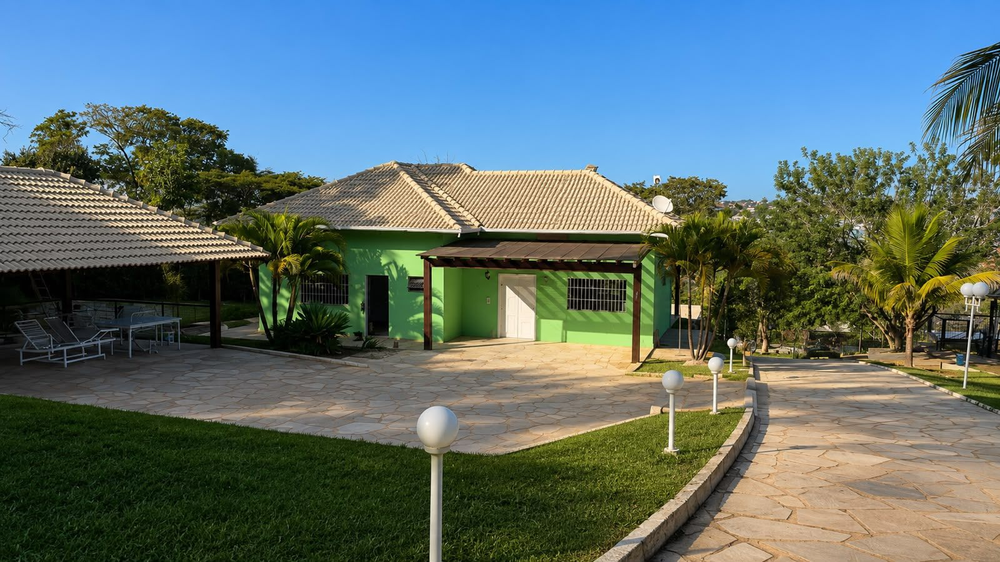
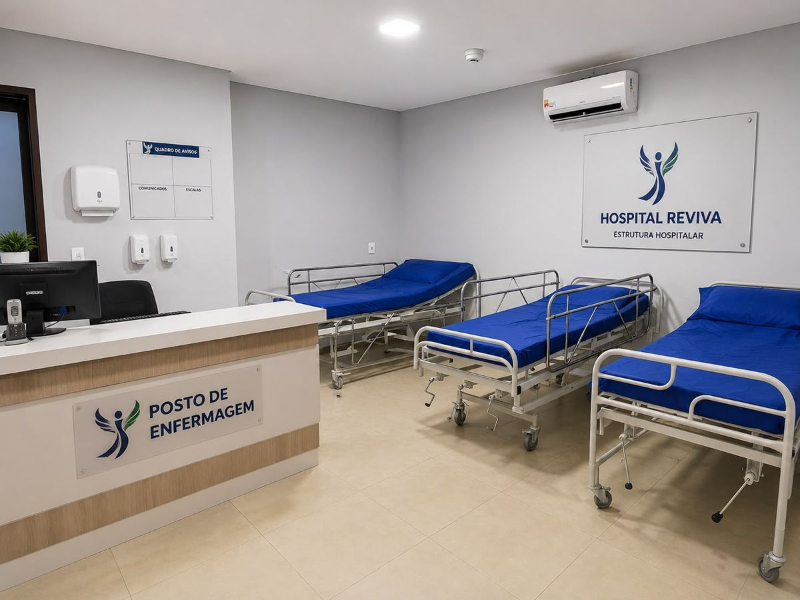
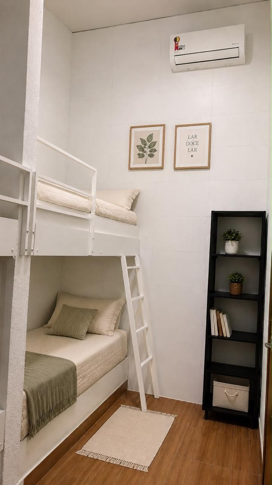
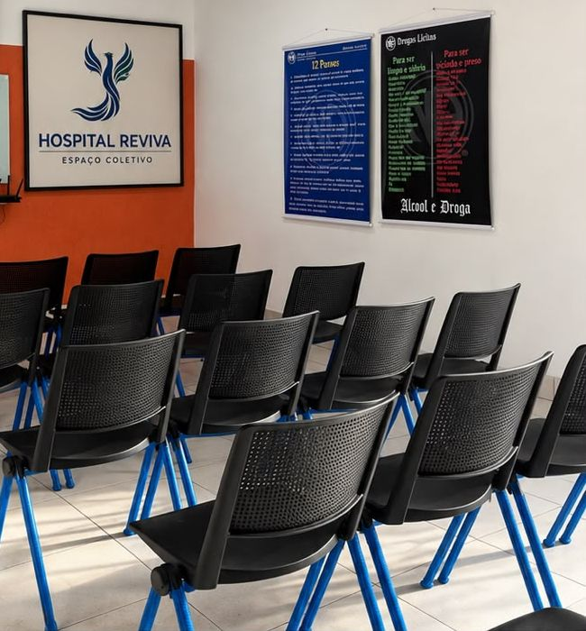
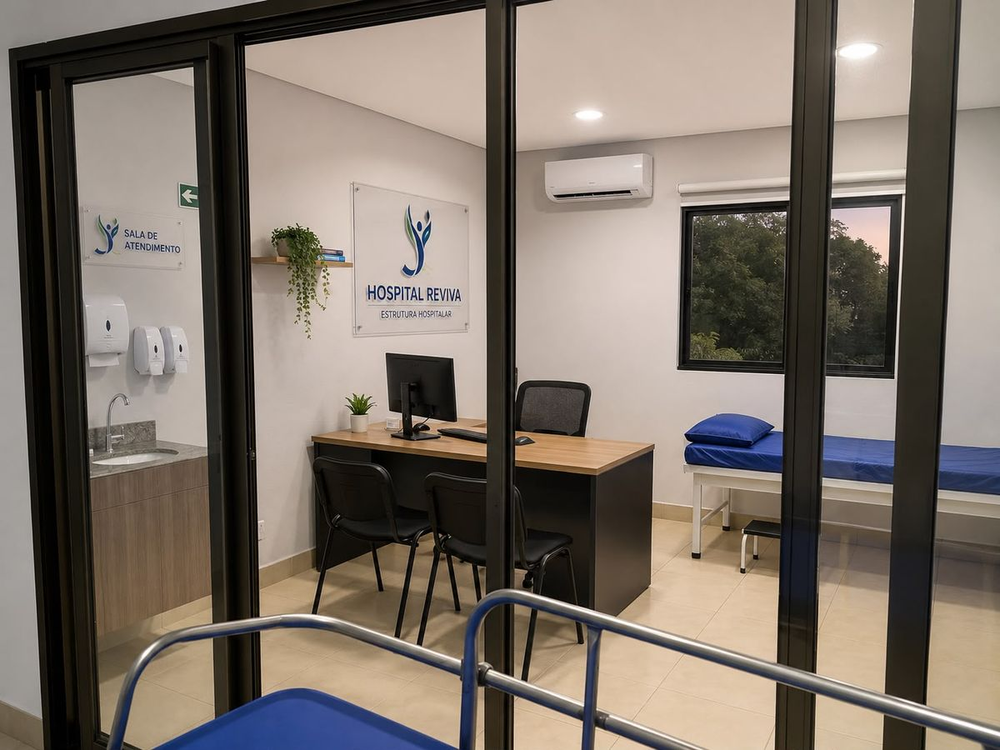
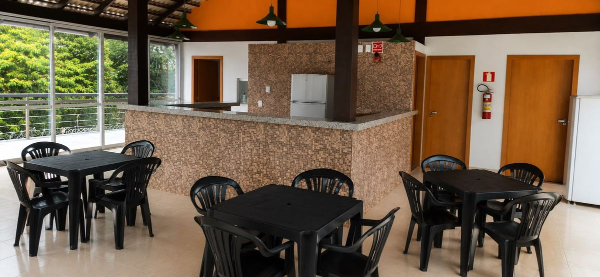
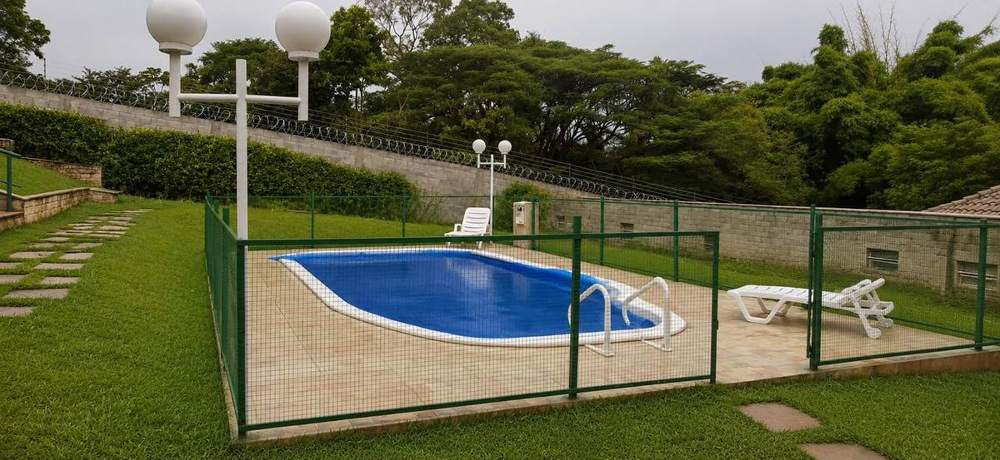
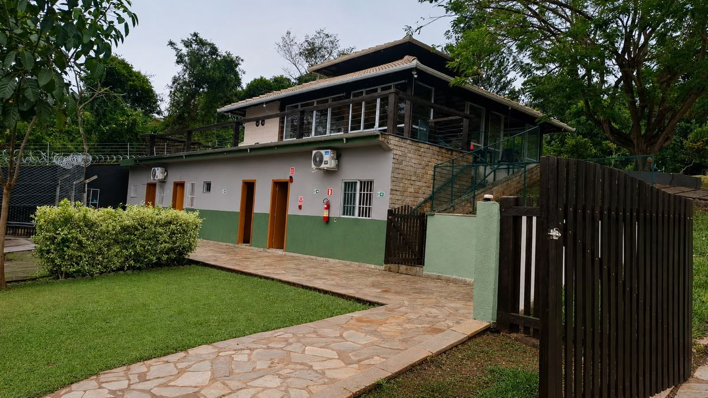
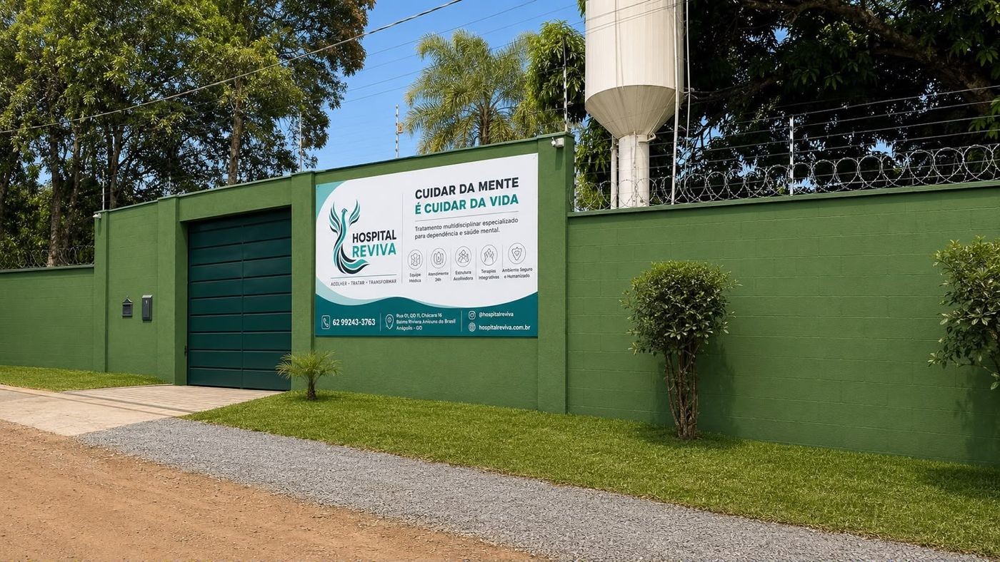

Dependência química e alcoolismo · Anápolis – GO
O primeiro passo para recomeçar pode ser uma conversa hoje.
Internação com acompanhamento médico e equipe multiprofissional 24 horas, em um ambiente seguro, arborizado e acolhedor. Fale agora com a equipe do Hospital Reviva pelo WhatsApp.
- Conversa sigilosa
- Orientação para a família
- Equipe de enfermagem 24h


Conheceu este endereço como Clínica Virtude? A unidade de Anápolis agora é o Hospital Reviva. Para atendimento aqui, use os contatos desta página.
Ver contatos →Para quem é
Quando a família percebe que sozinha não dá mais
A dependência química é uma doença e tem tratamento. Se algum destes pontos parece familiar, vale conversar com quem acompanha isso todos os dias.
Buscar ajuda não é desistir de alguém. É dar a ele uma chance real de tratamento.
O uso de álcool, crack, cocaína ou outras drogas saiu do controle, e as promessas de parar não se cumprem.
Trabalho, estudos, dinheiro e relacionamentos estão se perdendo aos poucos.
Já existem riscos à saúde, brigas em casa, dívidas ou situações de perigo.
Tentativas anteriores de parar sem acompanhamento não deram certo.
A família está exausta e não sabe por onde começar.
Cuidar da mente é cuidar da vida
Tratamento multidisciplinar, com estrutura hospitalar
Cada paciente recebe um plano de cuidado próprio, conduzido por uma equipe que trabalha junta: médicos, enfermagem, farmácia e profissionais de terapia.
Equipe médica
Avaliação, prescrição e acompanhamento médico durante toda a internação, incluindo a fase de desintoxicação.
Atendimento 24h
Posto de enfermagem funcionando dia e noite, com observação contínua dos pacientes.
Estrutura acolhedora
Chácara com jardins, alamedas, piscina e áreas de convivência. Quartos climatizados e espaços pensados para o descanso.
Terapias integrativas
Atendimentos individuais, grupos terapêuticos no espaço coletivo e atividades que ajudam a reconstruir a rotina.
Ambiente seguro e humanizado
Área monitorada e protegida, com respeito à dignidade e à história de cada pessoa, sem julgamentos.
Farmácia hospitalar
Farmacêutico responsável técnico e controle rigoroso dos medicamentos, inclusive os de controle especial.
Conheça o espaço
Estrutura hospitalar em meio à natureza
Ambientes clínicos completos e muito verde ao redor. Um lugar tranquilo para atravessar o tratamento com segurança.







Quer saber mais sobre a estrutura ou agendar uma visita?
Perguntar no WhatsAppO caminho do tratamento
Da primeira conversa até a alta
Um processo claro, para o paciente e para a família saberem o que vem em cada etapa.
- 1
Primeiro contato
Você conversa com a equipe pelo WhatsApp, conta a situação e tira as dúvidas. Sem compromisso.
- 2
Avaliação e admissão
O paciente é avaliado e a equipe define o plano de tratamento mais adequado para o caso.
- 3
Desintoxicação acompanhada
Na fase inicial, médicos e enfermagem acompanham de perto para que a abstinência seja atravessada com segurança.
- 4
Tratamento multiprofissional
Atendimentos individuais, grupos terapêuticos, atividades e uma rotina estruturada, dia após dia.
- 5
Família junto
Os familiares recebem orientação para entender a dependência e apoiar a recuperação.
- 6
Alta planejada
Preparação para a volta à rotina, com orientações para reduzir o risco de recaída.
Fale com a equipe
Escolha um dos números e chame no WhatsApp
Os dois números atendem a mesma unidade. Se um estiver ocupado, use o outro.

Dúvidas frequentes
O que as famílias mais perguntam
Como faço para internar um familiar?
Comece pelo WhatsApp. A equipe escuta a situação, explica como funciona a admissão e quais documentos são necessários, e agenda a avaliação.
A internação pode ser feita sem a vontade do paciente?
A legislação brasileira (Lei 10.216/2001 e Lei 11.343/2006, alterada pela Lei 13.840/2019) prevê a internação voluntária e a involuntária. A involuntária é solicitada pela família ou responsável legal e depende de avaliação e indicação médica.
Cada caso é avaliado individualmente. Fale com a equipe para receber orientação sobre a sua situação.
Quanto tempo dura o tratamento?
Depende da avaliação inicial e da evolução de cada paciente. A equipe define o tempo de internação e revisa o plano ao longo do tratamento.
A família participa? Pode visitar?
A participação da família faz parte do tratamento. Os dias e as regras de visita são informados na admissão, de acordo com a fase do tratamento.
Vocês atendem por plano de saúde?
Informe seu plano de saúde no WhatsApp e a equipe explica as opções de atendimento e de pagamento disponíveis.
O atendimento é sigiloso?
Sim. As informações de pacientes e familiares são tratadas com sigilo profissional, desde a primeira conversa.

Recomeçar é possível. A gente caminha junto.
Se você ou alguém que você ama enfrenta a dependência química ou o alcoolismo, fale com a equipe do Hospital Reviva agora.